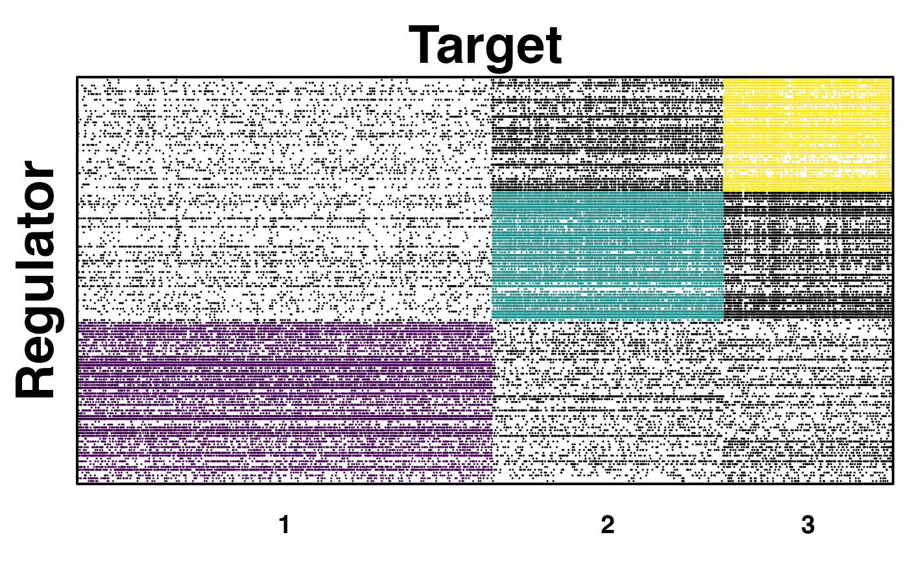

CONDOR (COmplex Network Description Of Regulators) implements methods for clustering biapartite networks and estimatiing the contribution of each node to its community's modularity, [(Platig et al. 2016)]) This function uses the result of PANDA algorithm as the input dataset to run CONDOR algorithm. More about condor package and usage.
pandaToCondorObject(panda.net, threshold)
| panda.net | Data Frame indicating the result of PANDA regulatory network, created by |
|---|---|
| threshold | Numeric vector of the customered threshold to select edges. Default value is the the midpoint between the median edge-weight of prior ( 3rd column "Motif" is 1.0) edges and the median edge-weight of non-prior edges (3rd column "Motif" is 0.0) in PANDA network. and the median edge-weight of non-prior edges (3rd column "Motif" is 0.0) in PANDA network. |
a CONDOR object, see createCondorObject.
# refer to three input datasets files in inst/extdat treated_expression_file_path <- system.file("extdata", "expr4_matched.txt", package = "netZooR", mustWork = TRUE) motif_file_path <- system.file("extdata", "chip_matched.txt", package = "netZooR", mustWork = TRUE) ppi_file_path <- system.file("extdata", "ppi_matched.txt", package = "netZooR", mustWork = TRUE) # Run PANDA to construct the treated network # \donttest{ treated_all_panda_result <- pandaPy(expr_file = treated_expression_file_path, motif_file= motif_file_path, ppi_file = ppi_file_path, modeProcess="legacy", remove_missing = TRUE )#>#>#># access PANDA regulatory network treated_net <- treated_all_panda_result$panda # Obtain the condor.object from PANDA network treated_condor_object <- pandaToCondorObject(treated_net, threshold = 0) # cluster condor.object treated_condor_object <- condorCluster(treated_condor_object, project = FALSE)#> [1] "modularity of projected graph 0.306134881290028" #> [1] "Q = 0.306345744728624" #> [1] "Q = 0.306345744728624"# package igraph and package viridisLite are already loaded with this package. library(viridisLite) treated_color_num <- max(treated_condor_object$red.memb$com) treated_color <- viridis(treated_color_num, alpha = 1, begin = 0, end = 1, direction = 1, option = "D") condorPlotCommunities(treated_condor_object, color_list=treated_color, point.size=0.04, xlab="Target", ylab="Regulator")# }